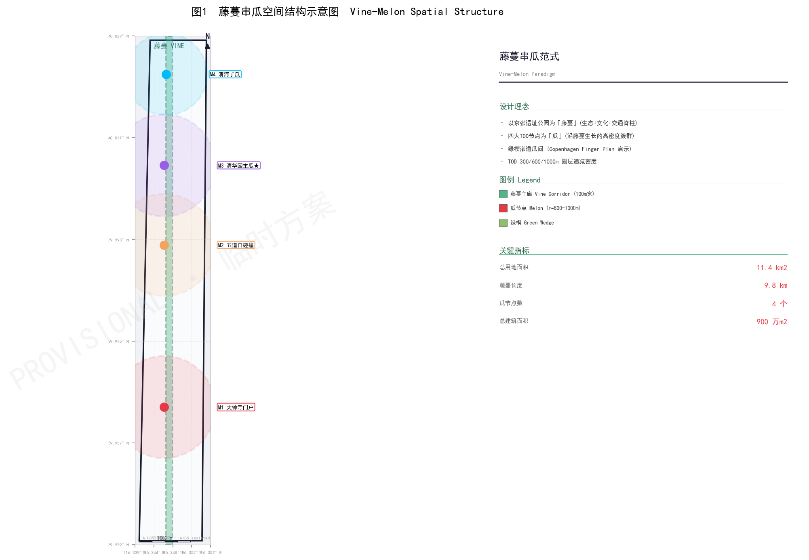
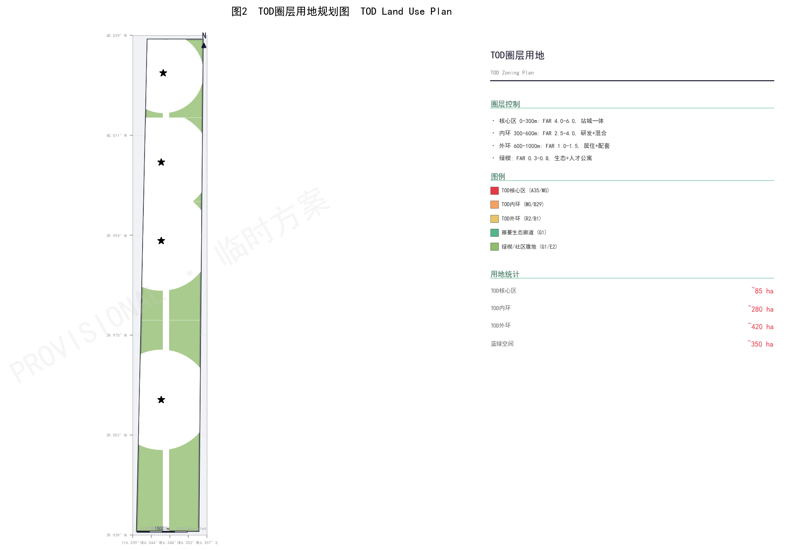
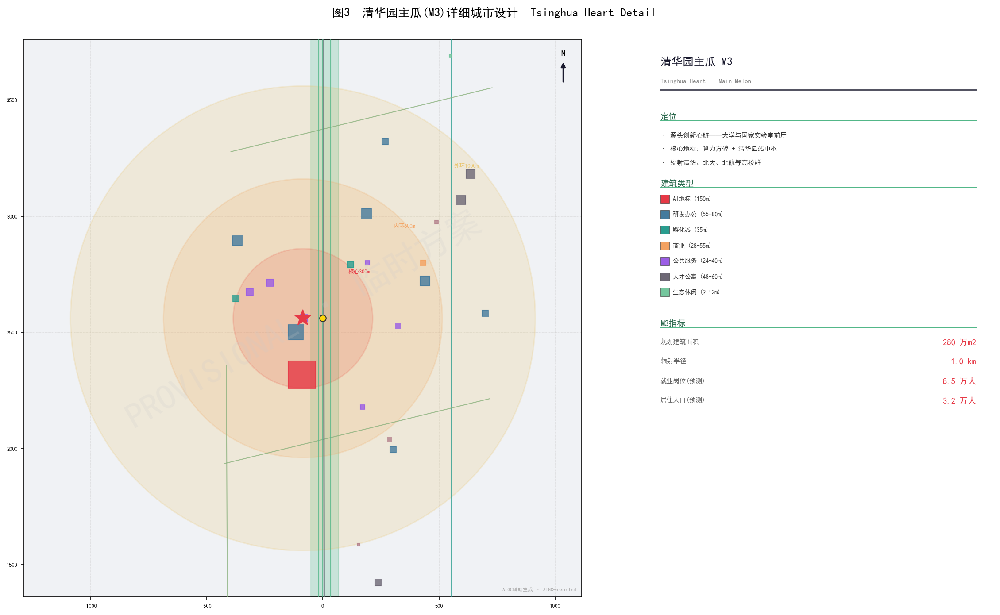
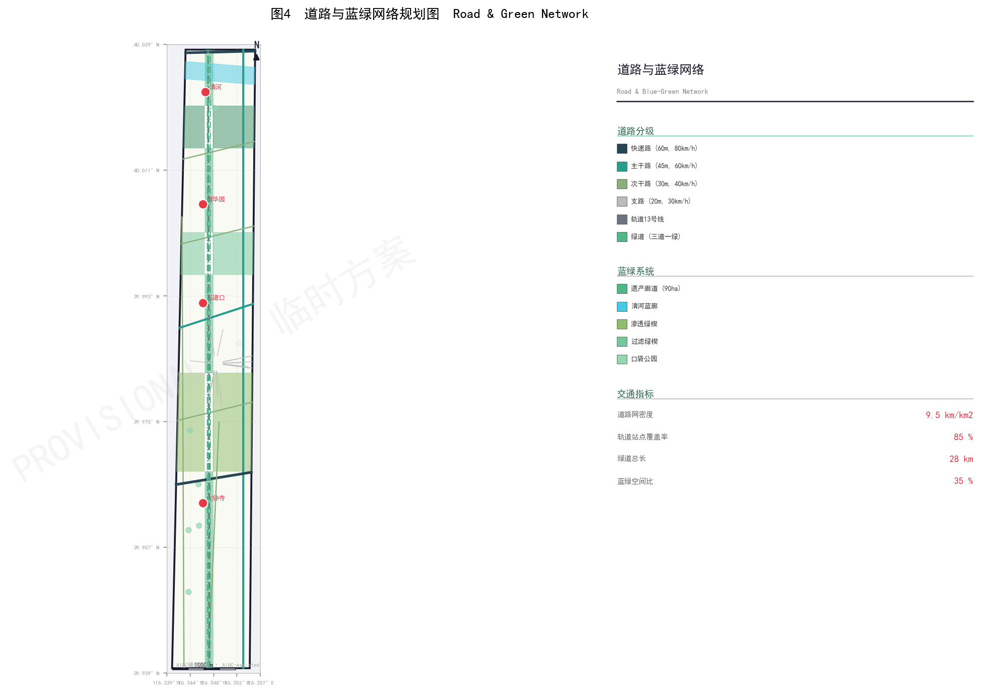
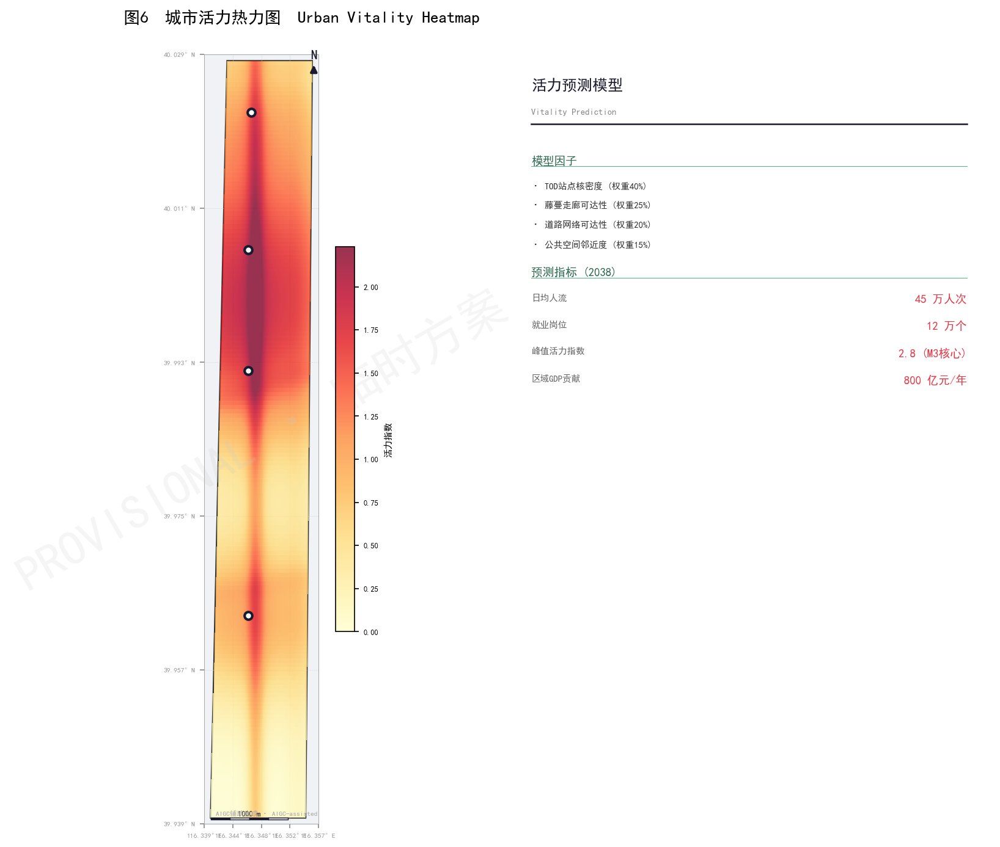
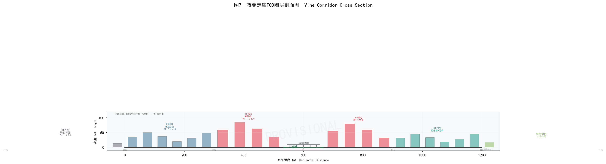
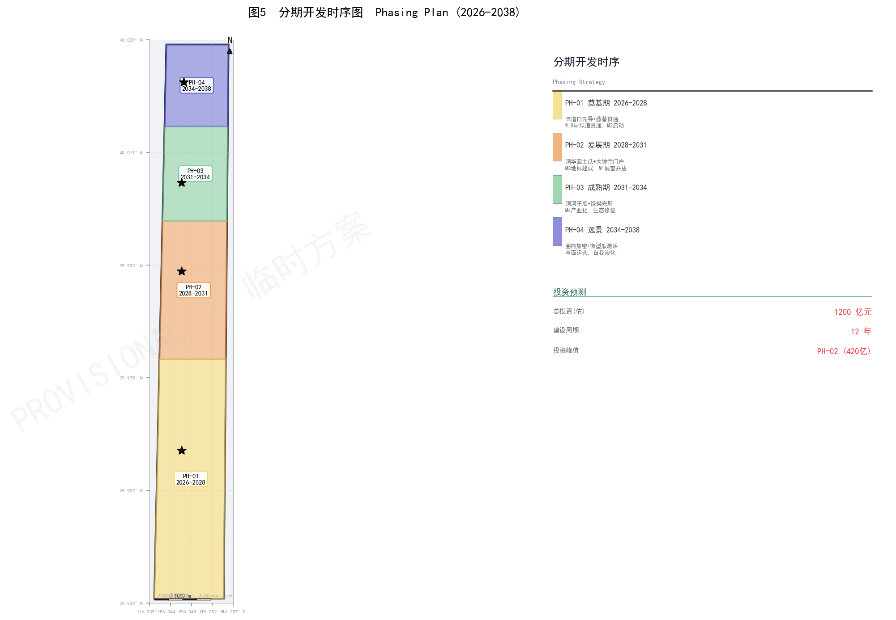

一条铁路，见证百年中国工业自强；一条藤脉，串起数字文明的创新节点。我们不做铁路的旁观者，而做遗产的转译者。
铁轨运输的是煤炭与人流，数轨传输的是算力与智能。同一条南北轴线，从工业文明的动脉，蜕变为数字文明的脊柱。保留铁轨不是怀旧，而是让历史层积成为创新的基底。
旧范式"A形双脊"试图用双轴并行覆盖狭长场地，导致结构冗余、生态断裂。新范式回归带形城市本质：单藤脉脊柱串起四个TOD核心节点，三绿楔指间渗透，疏密有致、张弛有度。
A形双脊结构存在三重结构性矛盾：
藤脉串核范式以哥本哈根手指规划（Finger Plan, 1947/1992）为结构性参照，将单根"手指"（藤脉）作为生态-遗产-交通复合脊柱，四个"核心节点"沿手指分布，三绿楔从指间渗透。这不仅是形式选择，更是对场地狭长形态的诚实回应。
参考文献：Calthorpe, P. (1993). The Next American Metropolis. Princeton Architectural Press; Danish Enterprise and Construction Authority (2007). The Finger Plan for Greater Copenhagen.
1140ha狭长带形场地，南北纵贯9.8km，被高校群、科技园区与成熟社区环绕。优势与约束并存，识别是设计的前提。

藤脉（Vine Spine）——三脉合一的复合脊柱： 生态藤蔓（蓝绿生态廊道、生物迁徙通道）、 历史文脉（京张铁路百年遗产、1909人字铁路精神传承）、 城市动脉（轨交13号线、9.8km慢行系统）； 核（Core）——沿脉分布的四个TOD创新核心节点，严格遵循300/600/1000m密度圈层法则； 绿楔（Wedge）——从东西两侧渗透，保持生态连续性，疏密有致、张弛有度。
面向中心城区的AI展窗。企业总部、国际论坛、AI消费体验。以回响之钟·AI编钟塔为文化锚点。
高校群与产业群的碰撞接口。创新创业孵化、高校技术转移、青年创业社区。以火花塔为地标。
源头创新心脏。基础研究、国家实验室前厅、算力中枢。以算力方碑（150m）为核心地标。
产业化呼吸空间。产业转化、开源社区、生态缓冲。以开源讨论舱群为特色地标。
| 维度 | A形双脊（旧） | 藤脉串核（新） |
|---|---|---|
| 空间逻辑 | 双脊并行+腰轴连接 | 单藤脉串多核，结构更清晰 |
| 生态渗透 | 五条横向廊道 | 三个绿楔差异化渗透 |
| TOD对齐 | 未严格圈层化 | 300/600/1000m三圈严格递减 |
| 遗产处理 | L-Spine线性公园 | 藤脉四层叠加（遗产+生态+轨交+慢行） |
| 国际对标 | 湖北A型骨架 | Finger Plan + Singapore Rail Corridor + King's Cross |
| 天际线节奏 | 均质化 | M1(75)→M2(125)→M3(150)→M4(24)m 梯度变化 |
参考：Soria y Mata, A. (1882). La Ciudad Lineal; Calthorpe (1993); 新加坡URA (2020). Rail Corridor Enhancement Plan.
四核总建筑面积900万m²，M3清华园主核规模最大（280万m²），承担源头创新核心功能。
| 要素 | 定位 | 规模 | 核心功能 |
|---|---|---|---|
| 藤脉 Vine Spine | 生态文化交通脊柱 | 9.8km / 117ha | 遗产廊道、生态脊柱、13号线、慢行三道一绿 |
| M1 大钟寺 | 南门展示门户 | 3.14km² / 220万m² | AI展窗、企业总部、国际论坛 |
| M2 五道口 | 交换节点 | 3.14km² / 240万m² | 高校-产业接口、孵化加速 |
| M3 清华园 | 源头创新心脏 | 3.14km² / 280万m² | 基础研究、算力中枢 |
| M4 清河 | 产业化呼吸空间 | 2.01km² / 160万m² | 产业转化、开源社区 |
四核沿藤脉南北分布，间距控制在1.5-2.5km之间，步行15-25分钟、自行车5-8分钟可达，确保藤脉慢行系统串联各节点：
核间距设计参考哥本哈根手指规划中Ballerup-Glostrup等车站城镇间距（约2-3km），但因京张场地尺度更小，间距适度缩短以增强步行连通性。
参考：Danish Enterprise Authority (2007). Finger Plan; Gehl, J. (2010). Cities for People. Island Press.
严格遵循Calthorpe（1993）TOD节点-场所模型，以轨交站点为圆心划定300/600/1000m三圈层，容积率随距离指数衰减。
| 圈层 | 半径 | FAR | 高度 | 步行 |
|---|---|---|---|---|
| 核心区 | 0-300m | 4.0-6.0 | 80-150m | 5min |
| 内环 | 300-600m | 2.5-4.0 | 35-80m | 10min |
| 外环 | 600-1000m | 1.0-1.5 | 24-60m | 15min |
| 绿楔 | 核间 | 0.3-0.8 | 9-24m | — |
FAR(d) = FAR
d为距站点距离（m），λ≈400m为衰减常数（参考库里蒂巴BRT-TOD法则）


总建筑面积采用"圈层面积×平均容积率"自下而上测算：
考虑到四核半径差异（M4为800m外环）、道路与绿地扣除、以及绿楔区域低强度开发，综合修正后总建面约900万m²。此为概念性指标，最终以控规为准。
密度分布参考库里蒂巴BRT轴线实测数据：轴线沿线FAR可达6.0，距站500m外降至2.0以下，1km外趋近1.0（Cervero & Kang, 2011）。
参考文献：Cervero, R. & Kang, C.D. (2011). "Bus rapid transit impacts on land uses and land values in Seoul, Korea." Transport Policy 18(1); Calthorpe (1993); 库里蒂巴市政府 (1975). Plano Diretor.
道路网密度9.5km/km²，轨道800m覆盖率85%，500m公交覆盖率100%。藤脉慢行系统9.8km贯通，构建"轨道+慢行+公交"绿色出行体系。
| 系统 | 线路/站点 | 服务水平 |
|---|---|---|
| 地铁13号线 | 大钟寺、五道口、清华园、清河 | 高峰2min |
| BRT/智轨 | 学院路专用道 | 高峰≤5min |
| 社区微公交 | 电动无人小巴循环 | 最后一公里 |
| 慢行系统 | 藤脉9.8km+绿楔连接 | 步行+自行车 |

"一脉一带两河三楔"结构，蓝绿空间总计约350ha，占场地面积31%。借鉴哥本哈根手指规划的指间绿楔理念。
M1-M2之间：社区农场2ha、户外运动带、口袋公园群（每200m一处），透水铺装率≥60%。
M2-M3之间：雨水花园群处理面源污染、学术草坪、临时策展空间、三层降噪植被带。
M3-M4之间：原生植被恢复、清河南岸生态工法修复、昆虫旅馆与鸟巢塔、AI传感器全覆盖。
1947年，哥本哈根都市规划提出"Finger Plan"：城市沿五条铁路走廊（手指）向外发展，指间保留绿色楔形绿地。1992年规划修订叠加TOD原则，要求车站周围1000m内集中80%的新开发。
本方案借鉴其核心结构，但做了尺度转译：
参考文献：Danish Enterprise and Construction Authority (2007). The Finger Plan: A Strategy for the Development of the Greater Copenhagen Area; Knowles, R.D. (2012). "Transit-oriented development in Copenhagen." Journal of Transport Geography 25.
五座标志性建筑构成空间锚点：三座朝圣地标（算力方碑、火花塔、回响之钟）+ 清华园站遗产中枢 + 开源讨论舱群。
以"方碑"为意象——古代石碑承载文明记忆，算力方碑承载数字文明的算力基石。四棱台造型，底部36m×36m，顶部收分至18m×18m。双层参数化穿孔铝板表皮，入夜LED灯光呈现流动数据可视化。
B3-B1：液冷机房、电力保障（地下30m）
1F-3F：算力展示大厅，巨型LED穹顶实时显示集群算力
4F-15F：液冷服务器集群
16F-25F：AI训练与推理专用楼层
26F-29F：AI观测台（会议室、VIP接待）
30F：360°观景平台，俯瞰京张全带
文化意义：数字时代的"石碑"——铭刻AI时代的算力基石，与京张铁路"自主创新"精神跨时代呼应。
以"火花"为意象——灵感闪现的瞬间。塔身螺旋上升扭曲形态，象征创新从火花到燎原的过程。螺旋外遮阳百叶表面嵌入光伏薄膜，贡献约15%塔楼用电。
1F-4F：火花大厅（通高中庭），创业者咖啡馆、路演角
5F-10F：垂直孵化器（每层4-8个独立单元，30-100m²/间）
11F-15F：加速器（成长型企业）
16F-20F：联合办公（灵活+固定工位）
21F-24F：风险投资中心
25F：火花观景台+屋顶花园
文化意义：五道口"宇宙中心"的青春与碰撞精神——每一个创业火花都可能燎原。
以大钟寺钟声文化为原点，将古代编钟的共振腔体原理与AI音乐生成结合。建筑形态取自传统钟亭歇山顶，以曲面玻璃与钛合金重新演绎。每日正午演奏AI生成的"日课曲目"。
B1-1F：AI编钟互动展厅——参观者哼唱/说话，AI实时转化为编钟曲谱播放
2F-5F：AI音乐实验室、声音艺术驻留中心
6F-8F：编钟声学共振腔（中庭贯穿6-15层）
9F-12F：全球AI治理研究中心
13F-14F：空中钟亭（下午茶、小型演出）
15F：钟塔观景台，每日整点演奏
声学设计：塔身内部中庭模拟编钟"合瓦形"截面，CFD优化声波传播路径。AI分析当日全球AI新闻热词，映射为编钟音阶，形成"AI声音日报"。
文化意义：古钟（1733年永乐大钟）与AI算法的跨时空对话。
在保留京张铁路清华园站历史站房基础上，向上叠加现代钢结构扩展体量，形成"历史外壳+当代内核"的新旧对话。一级保护外墙、月台、雨棚框架原样保留。
一级保护：原始站房外墙、月台、雨棚框架原样保留
二级保护：轨道、枕木、信号灯原位保留，允许功能置换
三级保护：周边环境可更新，需与历史风貌协调
1F：京张铁路历史展厅（保留售票窗口、时刻表、站名牌）
2F-4F：AI开放创新空间——共享工位、会议室、原型工坊
5F-6F：高校AI联合实验室
7F-8F：站台空中花园——保留月台雨棚钢结构，种植攀缘植物
参考案例：伦敦国王十字Central Saint Martins遗产改造、巴黎Station F货运大楼再利用。
藤脉第四段设置5组半地下圆形镜面不锈钢舱体，直径8m，每舱容纳10-15人。以AI先驱命名：图灵舱、香农舱、麦卡锡舱、辛顿舱、李飞飞舱。采用区块链Token预订系统，讨论结束后Token自动销毁，确保私密性与稀缺性。
舱体半埋入藤脉绿坡，镜面不锈钢表皮反射周边植被，实现视觉消隐。内部配备环形讨论桌、AI会议记录系统、实时翻译、知识图谱生成。
运营机制：开源社区成员可通过贡献代码或学术成果获得预订Token；Token在讨论结束后自动销毁（burn），不可转让，防止投机囤积。
参考：巴黎Station F创业生态系统；维基百科开源协作模式；区块链通证经济模型。
基于KDE（核密度估计）方法模拟城市活力分布，藤脉串核范式在四个维度上显著优于A形双脊旧范式。
采用核密度估计（Kernel Density Estimation）方法，以96栋建筑的功能、面积、高度为权重，以500m步行距离为带宽，模拟全日活力时空分布。职住比2:1确保7×24小时活力，避免单一功能区潮汐空洞。

从藤脉到核心节点的典型生态-城市断面，展示遗产、生态、轨交、慢行四层叠加与TOD圈层高度渐变。

宽约119m，四层叠加：遗产层（铁轨/站房）、生态层（乡土植被）、轨交层（13号线）、慢行层（三道一绿）。建筑高度≤12m，FAR<0.5。
绿楔缓冲后，外环居住（24-60m，FAR 1.0-1.5）→ 内环研发（35-80m，FAR 2.5-4.0）→ 核心区地标（80-150m，FAR 4.0-6.0）。
清河段恢复自然河岸线，去除硬质护岸；生物滞留带5km；慢行道透水铺装100%；年径流控制率≥80%。
传统铁路断面以排水为核心目标——雨水通过边沟、管道快速排入市政管网，导致面源污染直排入河、峰值流量增大、地下水补给不足。
本方案藤脉断面采用"海绵城市"理念转译：
综合措施实现年径流总量控制率≥80%，对应设计降雨量约27mm（北京地区）。
参考文献：住房和城乡建设部 (2014). 海绵城市建设技术指南; Fletcher, T.D. et al. (2015). "SUDS, LID, BMPs, WSUD and more – The evolution and application of terminology surrounding urban drainage." Urban Water Journal 12(7).
四期12年，基础设施先行、公共空间先导、地标锚定。总投资约1200亿元。
| 期次 | 年份 | 主题 | 核心内容 | 投资 |
|---|---|---|---|---|
| PH-01 | 2026-2028 | 奠基期 | 藤脉9.8km绿道贯通、M2五道口先导、M3启动区 | 250亿元 |
| PH-02 | 2028-2031 | 发展期 | M3算力方碑建成、M1门户开放、藤脉四段叙事完形 | 420亿元 |
| PH-03 | 2031-2034 | 成熟期 | M4清河子核产业化、三绿楔生态修复、TOD网络成熟 | 330亿元 |
| PH-04 | 2034-2038 | 远景期 | 圈内加密、微核心激活、全面运营、自我演化 | 200亿元 |

七大理论基石支撑藤脉串核范式，从1882年带形城市到当代新加坡铁路廊道，跨越140年城市规划智慧。
US NPS 1980s / ICOMOS 2008。藤脉作为线性遗产廊道，保护京张铁路历史层积，而非冻结式保存。
1947/1992 TOD overlay。藤脉=手指，核心节点=沿线节点，绿楔=指间绿地。结构直接参照。
1970s。沿公交轴线密度圈层递减法则，FAR(d)=FAR_core·e^(-d/λ)，λ≈400m。
Calthorpe 1993。300/600/1000m三圈层划分，节点价值与场所品质平衡。
Soria y Mata 1882。以交通干线为脊柱的纵向发展，最适合狭长带形场地。
URA 2010s。低干预生态韧性，遗产+生态+社区复合。藤脉段借鉴，核心节点高强度开发。
King's Cross Central（27ha）展示了工业遗产适应性再利用、公共空间先导、TOD无缝衔接与混合功能的成功范式。京张二期"融拆退补"策略（2026.8）提供在地实施框架：融遗产入生活、拆割裂障碍、退界释放空间、补生态服务。
覆盖公告1.3/1.4/1.5的13项设计任务和Agent任务书6项专项任务，19项全部覆盖，覆盖率100%。
| 编号 | 任务描述 | 响应章节 | 状态 |
|---|---|---|---|
| ANN-1.3-1 | 统筹研究范围：全球AI产业格局、战略定位、区域协同 | 第三章理论、附录D案例 | ✓ 已覆盖 |
| ANN-1.3-2 | 三区两翼空间协同逻辑 | 第一章结构、第九章绿楔 | ✓ 已覆盖 |
| ANN-1.4-1 | 总体设计范围：用地布局策略 | 第二章TOD、第十五章用地 | ✓ 已覆盖 |
| ANN-1.4-2 | 京张遗址公园活力带策略 | 第四章藤脉设计 | ✓ 已覆盖 |
| ANN-1.4-3 | 交通组织与慢行体系 | 第十三章道路与交通 | ✓ 已覆盖 |
| ANN-1.4-4 | 蓝绿空间与公共空间 | 第九/十四章、附录E | ✓ 已覆盖 |
| ANN-1.5-1 | 众智园详细设计（M3清华园主核） | 第七章M3详解 | ✓ 已覆盖 |
| ANN-1.5-2 | 北京AI原点社区（M2五道口） | 第六章M2详解 | ✓ 已覆盖 |
| ANN-1.5-3 | 大钟寺详细设计（M1门户核） | 第五章M1详解 | ✓ 已覆盖 |
| ANN-1.5-4 | 建筑规模与拆改留方案 | 第十至十二章 | ✓ 已覆盖 |
| ANN-1.5-5 | 公共服务设施配置 | 第十三章、附录E | ✓ 已覆盖 |
| ANN-1.5-6 | 更新项目清单与分期计划 | 第十五章分期 | ✓ 已覆盖 |
| ANN-1.5-7 | 3处朝圣地标 | 第十一章地标 | ✓ 已覆盖 |
| AGENT-1~6 | 六大Agent任务（案例/场景/画像/地标/组件/运营） | 附录A-F | ✓ 全部覆盖 |
全球8个标杆案例，从哥本哈根手指规划到纽约高线公园，为藤脉串核范式提供国际参照。
5条铁路手指+指间绿楔，车站1000m内集中80%开发。藤脉串核直接借鉴其结构。
24km旧铁路"低干预"改造，遗产+生态+社区复合。藤脉段四层叠加策略参考。
27ha旧铁路货场改造，Google总部+CSM艺术学院，公共空间先导策略。
沿BRT轴线密度指数衰减，公交分担率>70%。TOD圈层FAR法则来源。
130ha工业用地更新，铁路上盖开发+密特朗图书馆锚点，15000居民+30000就业。
34000m²世界最大孵化器，旧铁路货运大楼改造，1000+初创企业。M2火花塔运营参考。
日客流330万，垂直城市+多层步行网络+涩谷川恢复。核心区站城一体参考。
2.3km废弃高架铁路改造为线性公园，带动周边40个新项目。遗产活化经济效应参照。
9个GeoJSON图层、7张规划图件、完整数据目录，确保方案可验证、可复现、可审计。
所有GeoJSON数据采用CRS84坐标系（urn:ogc:def:crs:OGC:1.3:CRS84），即WGS84经纬度。面积统计在EPSG:4548（CGCS2000 / 3-degree Gauss-Kruger CM 117E）投影下复算，确保面积精度。
场地边界面积复算值为1140.6ha，与公告11.40km²一致。所有边界均为provisional（暂定）状态，最终以官方勘界为准。
建筑单体（96栋）为概念性点位数据，包含building_type、floors、height_m、tod_ring、distance_to_station_m等属性，可用于KDE活力模拟和视线分析。
数据可通过GitHub获取：https://github.com/Laser1209 · 许可证：CC BY-NC-SA 4.0